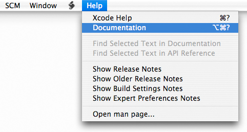
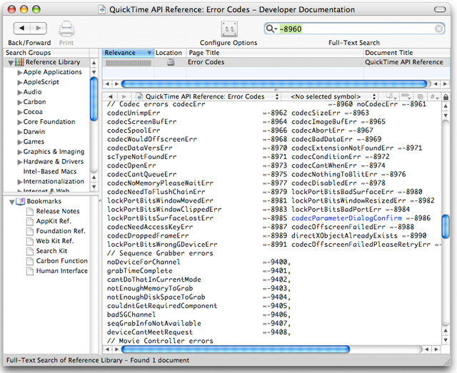
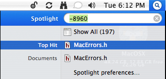
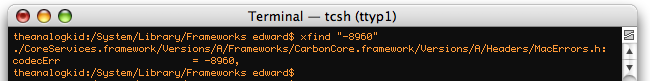
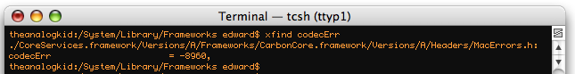
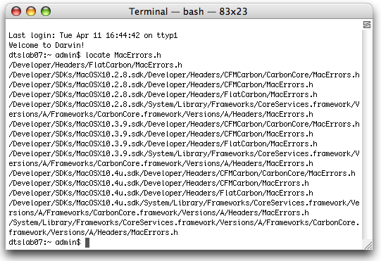

| ADC Home > Reference Library > Technical Q&As > Tools > Xcode > | |
|
Q: I'm having a hard time tracking down the meaning of some error codes being generated by my application. What are some quick ways to find these codes in the system headers or documentation?A: There are a number of ways to search for reference material on the system. You can also set up your development environment to make searching through system headers or sample code directories easier in the future. As an example, let us assume you're searching for the meaning of a Xcode Documentation SearchXcode includes its own documentation window. Use this window to view the technical documentation and other resources distributed as part of the ADC Reference Library. To open Xcode’s documentation window, choose the Help > Documentation menu item as shown in Figure 1. Figure 1: The Xcode Help menu.  From here you have several ways to find documentation: Browse documentation by title and category, search for symbol names, perform a full-text search for a word or phrase, an API search, and so on. For example, to find the definition of the error code Figure 2: The Xcode documentation window.  For a detailed description of how to best use Xcode's documentation search features see Viewing Documentation in the Xcode Workspace Guide. Spotlight Your HeadersYou can set up Spotlight to enable you to search developer header files or any additional folders you may have associated with your developer environment. Use the mdimport command to import metadata from files or file system hierarchies. Here's how to have Spotlight index additional folders such as $ mdimport /usr/include $ mdimport /usr/local/include $ mdimport /System/Library/Frameworks Note: On Mac OS X 10.4.x adding the Figure 3: Using Spotlight to search for -8960.  Using TerminalThere are of course a number of ways to search for items solely from the command line as well. While full coverage of this topic is beyond the scope of this Q&A, here are a couple of interesting ways to use find along with xargs and grep to perform searches. Create aliases of these commands so they can easily be used from the command line. afind "find . -type f -print0 | xargs -0 grep -H --" xfind "find . -name \"*.[cshmCSH]\" -print0 | xargs -0 grep -H --" Note: Aliases allow a string to be substituted for a word when it is used as the first word of a simple terminal command. To define an alias for xfind in the bash shell for example, use the following syntax: % alias xfind="find . -name \"*.[cshmCSH]\" -print0 | xargs -0 grep -H --" You can also learn more about find, xargs and grep from the Mac OS X Man pages. Figure 4: Using the xfind alias to search for -8960.  Figure 5: Using the xfind alias to search for codecErr.  As you can see from the above results, this error code is located in the file Figure 6: Locating MacErrors.h.  Document Revision History
Posted: 2009-02-13 |
|